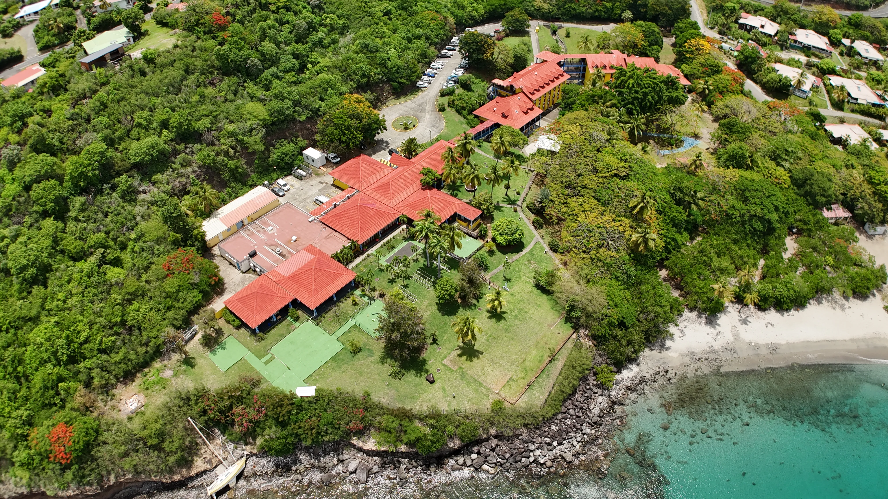

Blog
Drone en Guadeloupe — Articles et retours terrain
Conseils pratiques, réglementation, techniques et retours d'expérience sur le drone professionnel en Guadeloupe et aux Antilles françaises.

Guide complet
Drone professionnel en Guadeloupe : services, tarifs et réglementation
Tout ce qu'il faut savoir pour faire appel à un télépilote drone en Guadeloupe. Services disponibles, fourchettes de prix, réglementation DGAC et zones de vol aux Antilles.

Inspection technique
Inspection de toiture par drone en Guadeloupe : avantages, prix et déroulement
Comment fonctionne une inspection de toiture par drone ? Quels avantages par rapport aux méthodes classiques ? Combien ça coûte en Guadeloupe ? Réponses concrètes.

Agriculture
Agriculture de précision par drone aux Antilles : NDVI, NDRE et applications concrètes
Comment le drone multispectral aide les agriculteurs en Guadeloupe. Indices de végétation, détection du stress hydrique, optimisation des intrants. Retour terrain.